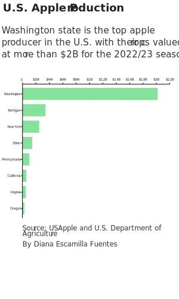
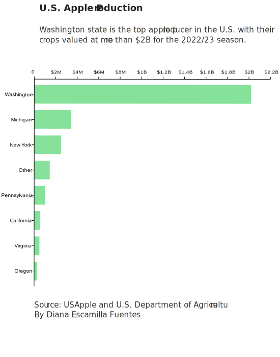
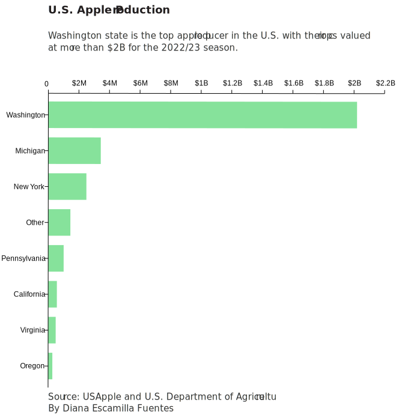

Before the additional tariffs were enacted, Brian Norwood, export sales manager for apple grower Gee Whiz II in Orondo, Wash, said his company shipped approximately eight million cartons of apples to India every year. Four years later, the company’s exports to India fell to about 250,000 cartons per year. However, with the Trump administration gone, India lifted the additional 20% in tariffs six months ago and the apple business picked up
The story of apples demonstrates how former President Donald Trump’s decisions to enact tariffs on some imports in the interest of U.S. national security boomeranged on American producers, hurting local economies across the country.
  It’s had a big impact in the positive direction this year with the additional tariffs being lifted, Norwood said.
In 2017, Washington state apple exports to India amounted to $120 million in revenue, the U.S Department of Agriculture said. In comparison, the 2022/23 season only amounted to less than $1 million in sales.